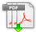

| Tippen Sie das Druckersymbol im Artikel-Anzeigefenster an. Der vollständige Artikel wird ausgedruckt, auch wenn dieser über mehrere Seiten läuft. |
|
Geben Sie einen oder mehrere Suchbegriffe im Textfeld neben der Lupe ein. Tippen Sie dann auf das Lupensymbol um die Suche zu starten. Sämtliche sich im Archiv befindlichen Ausgaben werden nach diesen Begriffen durchsucht. Eine Liste der Artikel die den Suchbegriffen entsprechen wird in einem Fenster angezeigt. Tippen Sie den gewünschten Artikel an: Die entsprechende Publikation wird geladen und der gewählte Artikel wird angezeigt. erhalten Sie so: Tippen Sie in das Feld für die Suchbegriffe - ein Fenster mit Optionen öffnet sich - tippen Sie dann auf das Feld mit dem Fragezeichen. |
| Den Button für die Anzeige des Inhaltsverzeichnisses antippen. |
| a) Mittels Buttons für die Seitennavigation: | |
|
Mit der Maus oder dem Finger antippen |
|
| Zum Dokumentanfang blättern | |
| 1 Seite zurück blättern | |
| 1 Seite weiter blättern | |
| Zum Dokumentende blättern | |
| Neben diesen Pfeilen finden Sie ein Eingabefeld mit dessen Hilfe Sie direkt zu einer bestimmten Seitennummer gelangen. | |
| b) Mit dem Finger auf der Seite: | |
| Verschieben Sie mit dem Finger eine Zeitungsseite nach links oder rechts. | |
| c) Via Seiten-Scrollleiste: | |
| Den Button für die Anzeige der Zeitungsseiten antippen. Verschieben Sie die Seitenikonen mit der Maus oder dem Finger nach oben oder unten. Tippen Sie die gewünschte Seite an. |
|
| a) PDF des gesamten Dokumentes: | |
|  | Button für die Anzeige des Dokument-PDF antippen. |
| a) PDF einer einzelnen Seite: | |
| Button für die Anzeige des Seiten-PDF antippen. Das PDf für die aktuelle, links stehende Seite wird angezeigt. | |
| Durch antippen dieses Buttons öffnet sich ein Fenster mit weiteren Informationen. |